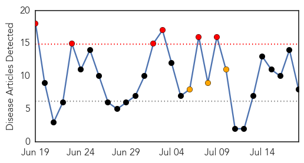
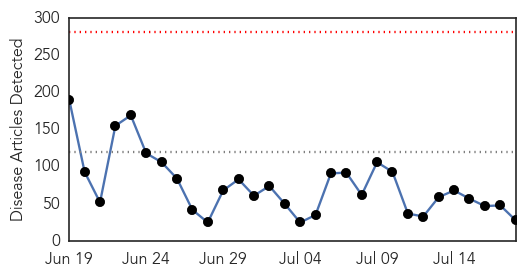
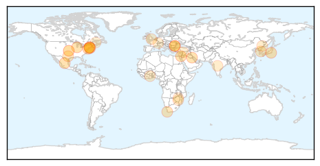

Dengue Fever
30-Day Web Trend
6 alerts, 3 warnings

30-Day Twitter Trend
2 alerts, 0 warnings

Article Locations

Article Confidences

Top Articles:
- 0.992
- Health Ministry calls for public to help prevent spread of dengue fever - Myanmar
- 0.987
- Myanmar: Health Ministry calls for public to help prevent spread of dengue fever
- 0.882
- Of 93 Percentage Victims only 1 Percentage aware of Dengue
- 0.856
- ‘Sibu base for state task force to fight dengue menace’ – BorneoPost Online
- 0.849
- AIIMS wants to check drop in platelets as dengue returns
- 0.823
- 4 mosquito bite prevention tips
- 0.609
- Rheumatoid Arthritis Neck And Shoulder Pain California Ventura
- 0.565
- JP Nadda pays surprise visit to Safdarjung Hospital, reviews Dengue preparedness
Top Tweets:
-
No tweets found for Jul 18, 2015
Unknown
30-Day Web Trend
0 alerts, 0 warnings

30-Day Twitter Trend
0 alerts, 0 warnings
Article Locations
Article Confidences
Top Articles:
- 0.985
- Quang Nam tackles diphtheria outbreak
- 0.917
- Chicago Tribune
- 0.917
- Chicago Tribune
- 0.917
- Chicago Tribune
- 0.917
- Chicago Tribune
- 0.917
- Chicago Tribune
- 0.903
- Bird flu will take four months to contain: experts
- 0.862
- Lyme Disease Is Growing, Spreading To New Areas
- 0.819
- Lyme Disease Is Growing, Spreading To New Areas
- 0.812
- When a sore throat leads to heart damage
- 0.808
- Lyme Disease Is Growing, Spreading To New Areas
- 0.762
- Is Your Dog at Risk for Chagas Disease?
- 0.734
- S Korea travel alert may be lifted soon
- 0.689
- Government releases blood test results of public estate residents affected by lead in drinking water incidents
- 0.655
- Man, cow die of anthrax in NE Bulgaria
- 0.655
- Mass disinfection in Bulgaria’s Vlada Gvardiya over anthrax poisoning suspicion
- 0.620
- Man, cow die of anthrax in NE Bulgaria (ROUNDUP)
- 0.614
- Bird Flu: Ministry’s request for 12 cars is strange – GII
- 0.608
- Ignoring blackened toes may lead to limb amputation
- 0.600
- Could herbal medicine has effect on curing cervicitis - Base Articles
- 0.600
- Women’s big killer
- 0.585
- When Doctors Accuse Parents of Medical Child Abuse
- 0.539
- Health Minister inspects services in Hama province
- 0.536
- 36,000 Masvingo Residents Facing Water Crisis
- 0.512
- Zim one of few countries to reduce HIV, Aids pandemic
- 0.512
- SGU Set to Host 2014 One Health One Medicine Caribbean Conference
- 0.511
- Heat warning issued for this weekend
- 0.503
- ARMC offers programs to help manage chronic conditions - TheAlpenaNews.com
Top Tweets:
- 0.907
- Si un político en una parte de África dice que debe ser gobernador porque el dios Unkulunkulu se lo dijo, sería tildado de manipulador.(1/2)
- 0.595
- Drafts de mi mente, porque aquí en Twitter no guardo un carajo.
- 0.578
- EID: Molecular Epidemiology of Hospital Outbreak of Middle East Respiratory Syndrome, Riyadh, Saudi Arabia, 2014 http://t.co/uVlYghz4Va